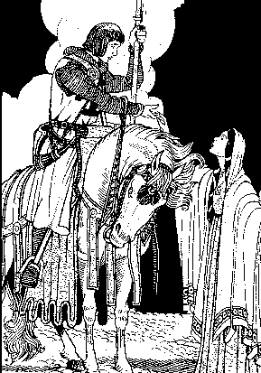

1.Merc'hig koantig euz-a Roc'han, alaz,
Merc'hig koantig euz-a Roc'han,
Ne oa merc'h nemed hi-unan.
2 Etre daouzeg ha trizeg vloaz
Da oa dezhi kemer ur gwaz,
3. Da oa dezhi ober dilenn
Tre baroned ha marc'heien.
4. Tre marc'heien ha baroned
Hag a zeue d'he darempred
5. Na blije nekun dezhi anez
Nemed an aotrou baron Vazhe
6. An aotrou kastel Traoñyoli
Den klog a goste 'n Itali
7. Hennezh a blijaz d'he c'halon
Dre ma oa leal ha gwirion.
8. Tri bloavezh hanter e oa bet
E plijadur an daou bried.
9. Ken a zeuas kannad d'an holl
Da vond d'ar brezel da Zav-heol.
10. - P' emaon d'eus ar gwad uhellañ,
Red eo din moned da gentañ.
11. Arsa'ta, kenderv, pa eo red
Dit a ran karg deus va fried.
12. Deus va fried, deus va mab ker,
Kloareg mad, pezh outo preder!
13. Tronoz-vintin, pa oe kuit,
Marc'het mat, sternet, hag iskuit;
14. Setu an itron, oc'h ouelo,
O tiskenn gant ar pazennoù:
15. O tont d'an traoñ gant he c'hrouadur,
A hirvoude an itron fur.
16. Beteg ennañ pa oa degoue'et,
Krog e penn e c'hlin he-deus graet,
17. E penn e c'hlin he deus kroget,
Gant he daeroù deus hen glebet
18. - Va aotrou ker, ha ! me ho ped,
En an' Doue ! n'am lezit ket !-
19. An aotrou, gant truez outi,
A astennas e zorn dezhi;

20. Ha d'an nec'h en deus hi savet,
Hag en e 'raok 'neus hi lakaet;
21. War e varc'h neus hi aze'et,
Hag he briatat en deus graet.
22. - Jannedig kaezh, tav az oueloù,
Kent ur bloaz vin deuet en-dro .-
23. Hag e vab en deus kemeret
Diwar barlenn e zous pried;
24. Tre e zivrec'h e gemeras,
Hag outañ ker kaer a sellas:
25. - Ne ket, ma mab, pa vi en oad
Ez i d'ar brezel gant da dad?-
26. Pa oa o vont 'maez deus ar porzh,
Bras ha bihan a grie forzh,
27. Bihan ha bras holl a ouele;
Nemet ar c'hloareg, eñ na rae.

II
28. Ar c'hloareg trubard lavare
D'an itron yaouank, ur beure:
29. - Setu ar bloavezh echuet,
Kerkoulz hag ar brezel, me gred;
30. Setu echuet ar brezel,
Ha na zistro ket d'ar c'hastell.
31. Leveret din, va c'hoar itron,
Pe avat a venn ho kalon ?
32. Daoust hag eo deut ar c'hiz nevez,
Bev an ozac'h, chom intañvez ?
33. - Serr da veg, kloareg milliget !
Leun eo da galon a bec'hed
34. Mar ve ma fried barzh an ti,
E torrfe dit da izili.-
35. Ar c'hloareg pa'n deus hi c'hlevet
D'ar chas-si e-kuzh 'mañ aet,
36. Ki-red an aotrou neus kavet,
E gouzoug en deus kontellet.
37. Ha goude m'en deus hen lazhet,
Gant e wad en deveus skrivet,
38. Skrivet en deveus lizherioù
Da gas d'an arme d'an aotrou
39. Hag el lizherioù oa merket:
"Ho kwreg, aotrou ker, zo nec'het
40. Ho kwregig gaezh zo gwall nec'het
En abeg d'ur reuz zo c'hoarve'et
41. Da hersal an hei'ez 'mañ bet,
Hag ho ki-red-gial zo kreouet."
42. Ar baron en deus askrivet
D'al lizher, pa 'n deus hen lennet:
43. "Laret d'am gwreg ket kemer nec'h
Ni hon eus arc'hant a-walc'h
44. Mard eo marv va c'hi-red-gial,
O tont d'ar gêr, me breno 'n all;
45. Met na heuli re an hei'ez,
Gant aon rak belourien direizh. "
III
46. Monet beure ar c'hloareg fall
Davet an itron ur wech all:
47. - Koll a rit, itron, ho kened;
O ouelañ noz-deiz 'vel ma ret.
48. - Me na ran forzh gant va gened,
Pa na zeu en-dro va fried.
49. - Pa na zeu ho pried en-dro,
'Michañs, eo dime'et pe marv.
50. E bro sav-heol zo merc'hed koant,
Hag ouzhpenn o deus kalz argant
51. E bro sav-heol a zo brezel;
E-leizh, siwazh ! a renk mervel.
52. Mard eo dimet, milliget-hen,
Mard eo marv, ankouait-hen.
53. - Mard eo dimet, me a varvo,
Me a varvo, mard eo marv.
54. - Ar bank en tan na laker ket,
Dre ma ve an alc'houez kollet;
55. Un alc'houez nev, war va menoz,
Zo gwell eget un alc'houez kozh.
Goret eo da deod gant traoù-lik.-
57. Ar c'hloareg evel m'he c'hlevas,
D'ar marchosi e-kuzh a eas
58. Marc'h an aotrou en deus kavet,
Kaerañ oa er vro hed-ha-hed;
59. Gwenn evel vi ha flouroc'h c'hoazh;
Prim evel evn, ha kas-digas;
60. Ha biskoazh yeotenn na beuras
Nemet lann-bil ha segal glaz.
61. Ar c'hloareg pa 'n deus arvestet,
E c'hour-glean 'n e vrusk neus plantet;
62. Ha goude ma'n deus hen pilet,
D'ar baron en deveus skrivet:
63. "C'hoarve'et eo ur reuz all er gêr
(Na daeret ket, va aotrou ker)
64. "O tont eus ur fest-noz d'ar gêr
Torret gant ho marc'h e ziv'sker"
65. Ar baron en deus askrivet:
"Ha gwir eo ve va marc'h lazhet !
66. Lazet va marc'h ! kreouet va c'hi !
Kenderv kloareg, aliet-hi !
67. 'Velken, n'eo ket ret ober trouz,
Nemet mont mui d'ar festoù-noz;
68. N'eo ket hepken div'sker roñsed.
Terriñ priejoù a vez graet."
IV
69. A-benn ur pennad goude-se,
'Teuas ar c'hloareg adarre
70. - Ouzhin, itron, a zentefec'h,
Pe bremañ raktal e varfec'h !
71. - Gwell eo ganin mil gwech mervel
Vit ober ur pec'hed marvel.-
72. Ar c'hloareg lik, pa he c'hlevas,
Gant ar gounnar a zridallas:
73. E c'hougle'e en deus diwennet,
Ha ganti en deus hen bannet;
74. Met he ael gwenn hi diwallas,
Ha gant ar voger e skoas;
75. Hag an itron gaezh d'en em dec'h;
Ha da brennañ 'n nor war he lerc'h.
76. Ha hen da zastum e c'hour-glean,
Ken diboell evel ur c'hi klañv;
77. Hag eñ d'an traoñ gant an diri
Ha daou ha daou, ha tri ha tri;
78. Ha tre e kambr ar vagerez;
Ar bugel enni kousket aes
79. Enni e-unan ar bugel,
Ur vrec'h er-maez eus e gavell,
80. E vrec'hig istribilh a-grenn,
Hag e vrec'h all dindan e benn;
81. Hag e galonig dizolo...
siwazh ! mamm baour, c'hwi a ouelo !
82. Ha goude d'an nec'h e pignas,
Hag e du ha ruz e skrivas,
83. Skrivas ken-ha-ken d'an aotrou:
"Hastit ! hastit da zont en-dro
84. Hastit, aotrou, da zont d'ar gêr
Da lakaat reizh en ho maner;
85. Lazhet ho ki, hag ho marc'h glas,
N'eo ket aze ra din-me wazh,
86. N'eo ket aze raio deoc'h wazh:
Lazet ho pugelig, siwazh !
87. Ar wiz-vras he deus hen debret
Keit ha m'oa er bal ho pried,
88. Er bal gant he dous miliner
A blant ur rozenn er maner"
V
89. P'erruas al lizher gantañ,
Oa o tonet deus an emgann,
90. Oa o tonet trezek e vro;
C'hoari-gaer gant an drompilhoù.
91. Tra ma oa o lenn al lizher,
Teue ar baron taer-oc'h-taer
92. Ha pa oa al lizher lennet,
Tre e zaouarn deus hen flastret,
93. Ha gant e zent deus hen roget,
Ha gant treid he varc'h mac'hellet.
94. - Prim ! trezek Breizh; primoc'h 'ta, floc'h !
Pe me blanto va goaf ennoc'h !-
95. An aotrou er gêr pa erruas
Tri zaol war an nor-borzh a reas,
96. War an nor-borzh a reas tri zaol,
Ken a lakaas da grenañ 'n holl.
97. Ar c'hloareg evel ma klevas,
Da zigor an nor a redas:
98. - Petra ta, kloareg milliget,
M'boa ket roet dit karg ma fried !-
99. Ha plantañ e c'hoaf en e veg,
Ma teuas dre e choug ar beg.
100. Hag eñ d'an nec'h gant an diri,
Ha tre e-barzh kampr he hini
101. Ha kent ma hellas lavar ger,
Gant e gleñv he zreuzas emberr.
VI
102. - Aotrou beleg, din leveret,
Er c'hastell petra peus gwelet.
103. - Me am eus gwelet ur c'hlac'har
Mar zo bet biskoazh war zouar;
104. Gwelet ur verzherez am eus,
Hag he merzherier 'vont gant keuz.
105. - Aotrou beleg, din leveret,
Er c'hroaz-hent petra peus gwelet ?
106. - Ur c'hagn a welis dizolo,
Ha chas ha brini war he zro.
107. - Petra peus gwelet er vered,
Da sklaerder al loar, ar stered ?
108. - Un itron wenn en he c'hoazhez
A welis war ur bez nevez
109. Ur mabig koant war he barlenn,
Toullet treuz-didreuz e gerc'henn,
110. A gostez dehou ur c'hi-red gial,
Ur marc'h gwen-kann, a gostez all
111. An eil e c'houzouk kontellet,
Egile treuzet e vruched
112. Hag o fennoù a astennent,
Hag he daouarn flour a lippent;
113. Ha hi a-youl-vat, tro-e-tro,
A rae allazig dezho
114. Hag he mab, dre van gwarizi,
A rae allazig dezhi
115. Ken a eas al loar da guzhet,
Ha netra mui n'am eus gwelet;
116. Nemet klevet an eostig-noz
A gane gwerzh ar baradoz.